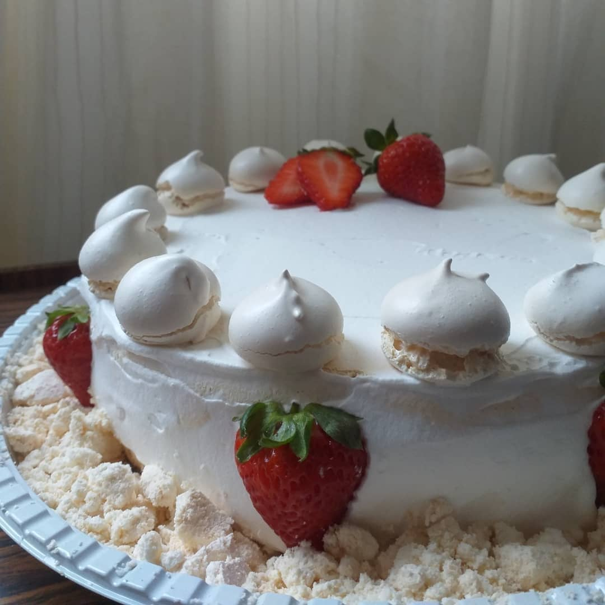

Sobre os Suspiros da Jú
Localizado em São Bernardo do Campo, no bairro Demarchi, os Suspiros da Jú trás uma especiaria única, com uma receita de mais de 60 anos.
Nosso diferencial é a casquinha crocante por fora, e por dentro, um creminho irresistível..
Nossa Localização
Um pouco mais sobre nossas variedades:
- Sabor tradicional, raspas de limão siciliano ou de laranja
- Tamanho de suspiros grandes ou pequenos
- Bolo feito com placas de suspiro, recheado com merengue
- Lembrancinhas para eventos
- Merengue no copo de 300ml